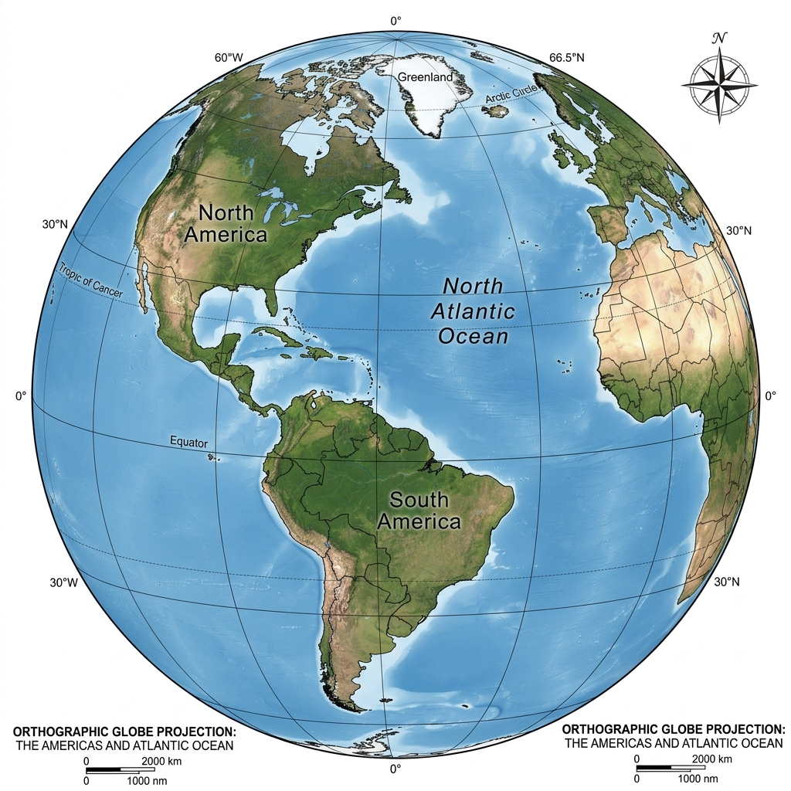
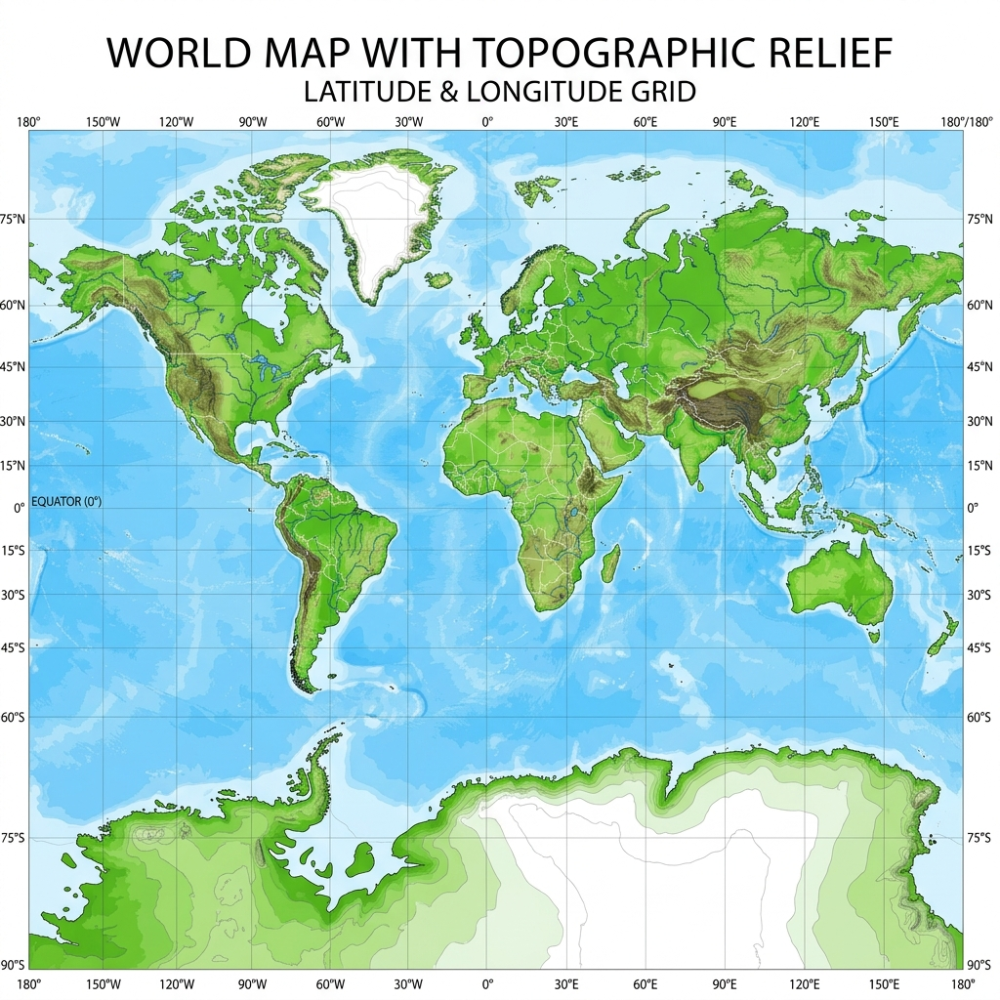
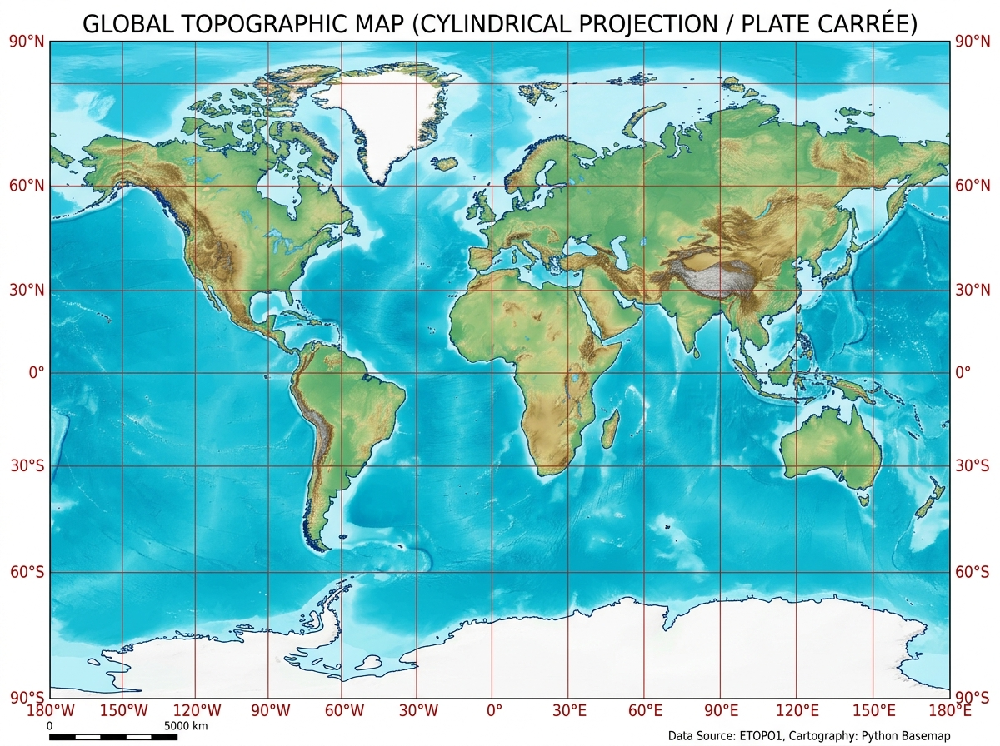
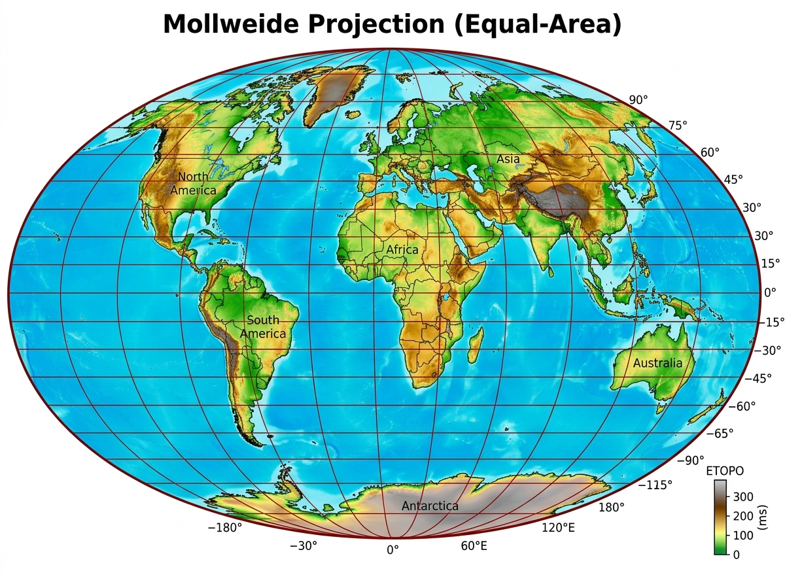
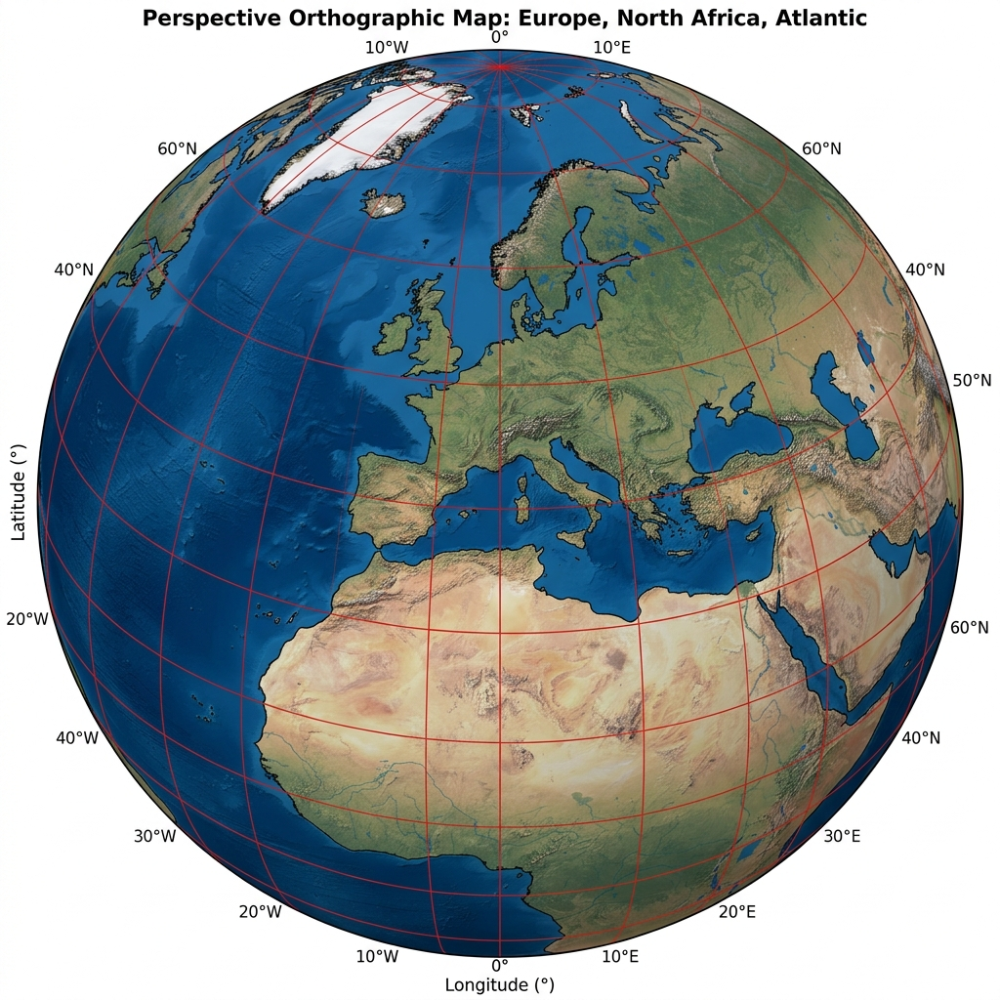
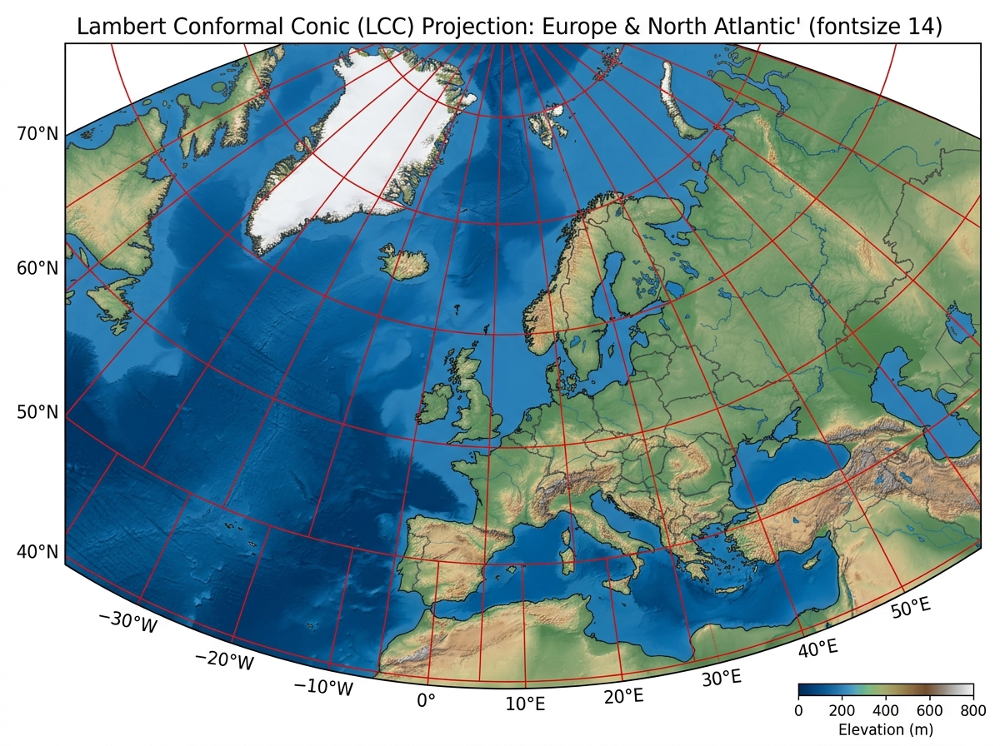
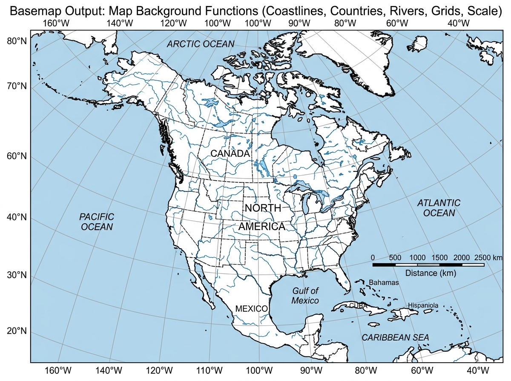
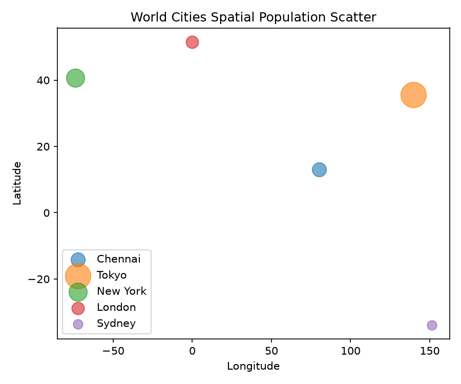
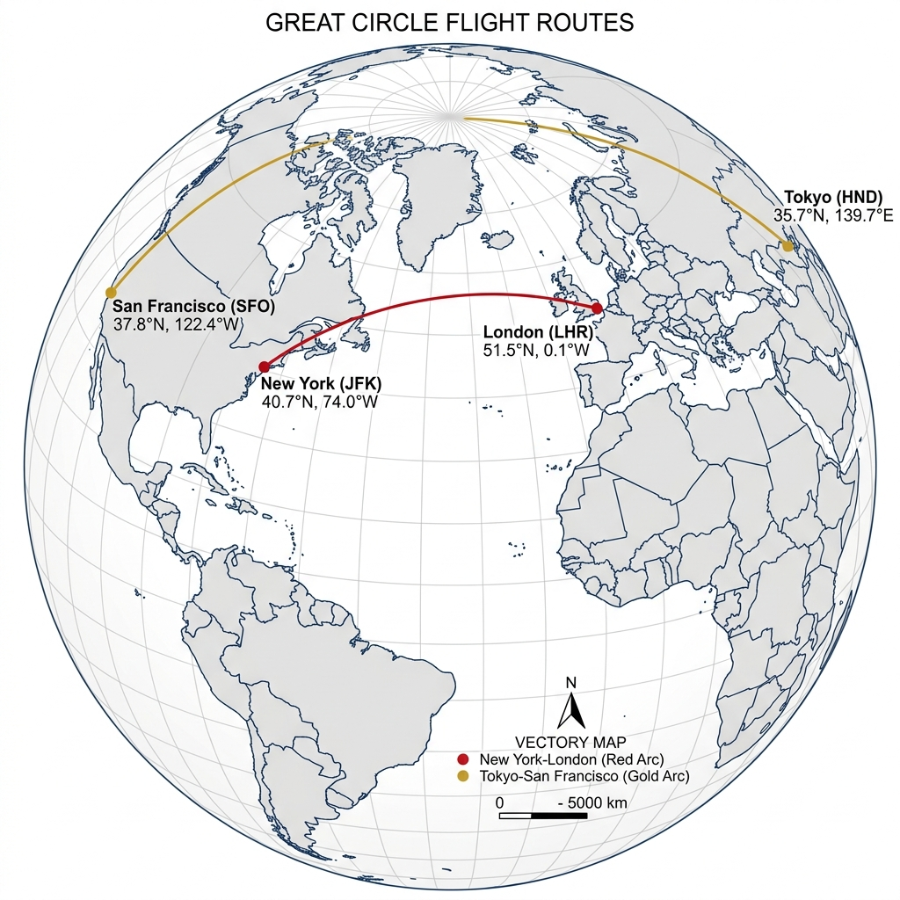

Geographic Data with Basemap
One common type of visualization in data science is that of geographic data. Matplotlib's main tool for this type of visualization is the Basemap toolkit, which lives under the mpl_toolkits namespace. It provides a Matplotlib axes that understands spherical coordinates and allows us to easily over-plot data on the map.
import numpy as np
import matplotlib.pyplot as plt
from mpl_toolkits.basemap import Basemap
plt.figure(figsize=(8, 8))
m = Basemap(projection='ortho',
resolution=None,
lat_0=50, lon_0=-100)
m.bluemarble(scale=0.5)🖼️ Orthographic Globe Output

Map Backgrounds & Grid Lines
We'll use an etopo image (which shows topographical features both on land and under the ocean) as the map background. The draw_map() helper draws shaded relief with parallels and meridians.
from itertools import chain
fig = plt.figure(figsize=(8, 8))
m = Basemap(projection='lcc', resolution=None,
width=8E6, height=8E6,
lat_0=45, lon_0=-100)
m.etopo(scale=0.5, alpha=0.5)
def draw_map(m, scale=0.2):
m.shadedrelief(scale=scale)
lats = m.drawparallels(np.linspace(-90, 90, 13))
lons = m.drawmeridians(np.linspace(-180, 180, 13))
lat_lines = chain(*(tup[1][0] for tup in lats.items()))
lon_lines = chain(*(tup[1][0] for tup in lons.items()))
all_lines = chain(lat_lines, lon_lines)
for line in all_lines:
line.set(linestyle='-', alpha=0.3, color='r')🖼️ Shaded Relief with Grid Lines

Cylindrical Projections
The simplest of map projections are cylindrical projections, in which lines of constant latitude and longitude are mapped to horizontal and vertical lines, respectively. This type of mapping represents equatorial regions quite well, but results in extreme distortions near the poles.
fig = plt.figure(figsize=(8, 6), edgecolor='w')
m = Basemap(projection='cyl', resolution=None,
llcrnrlat=-90, urcrnrlat=90,
llcrnrlon=-180, urcrnrlon=180)
draw_map(m)📖 Cylindrical Projection — Key Points
- Plate Carrée (cyl): Simplest equidistant latitude/longitude grid projection.
- Mercator (merc): Preserves angles (conformal), standard for marine navigation.
- Equal-Area (cea): Preserves area ratios across latitudes.
- Arguments specify
llcrnrlat/lon(lower-left) andurcrnrlat/lon(upper-right) bounds.
🖼️ Cylindrical Projection Output

Pseudo-Cylindrical Projections
Pseudo-cylindrical projections relax the requirement that meridians remain vertical; this gives better properties near the poles. The Mollweide projection is an equal-area projection in which all meridians are elliptical arcs, preserving geographic area ratios across the globe.
fig = plt.figure(figsize=(8, 6), edgecolor='w')
m = Basemap(projection='moll', resolution=None,
lat_0=0, lon_0=0)
draw_map(m)📖 Pseudo-Cylindrical — Key Points
- Mollweide (moll): Equal-area projection with elliptical arc meridians.
- Preserves Area: Essential for thematic maps showing population density or climate data.
- Sinusoidal (sinu): Another equal-area projection with sinusoidal meridians.
lat_0, lon_0set the central viewing point on Earth's surface.
🖼️ Mollweide Projection Output

Perspective Projections
Perspective projections are constructed using a particular choice of perspective point, similar to photographing Earth from space. The orthographic projection (projection='ortho') shows one side of the globe as seen from deep space, displaying half the globe at a time.
fig = plt.figure(figsize=(8, 8))
m = Basemap(projection='ortho', resolution=None,
lat_0=50, lon_0=0)
draw_map(m)📖 Perspective — Key Points
- Orthographic (ortho): View from infinite distance; shows hemispheric 3D globe.
- lat_0=50, lon_0=0: Centers perspective on Europe and North Atlantic.
- Gnomonic (gnom): Projects from Earth's center; great circles become straight lines.
- Stereographic (stere): Conformal projection ideal for polar regions.
🖼️ Perspective Orthographic Output

Conic Projections
A conic projection projects the map onto a cone tangent or secant to the sphere, which is then unrolled. The Lambert Conformal Conic (projection='lcc') uses two standard parallels (lat_1 and lat_2) where shape and scale distortion are zero.
fig = plt.figure(figsize=(8, 8))
m = Basemap(projection='lcc', resolution=None,
lon_0=0, lat_0=50,
lat_1=45, lat_2=55,
width=1.6E7, height=1.2E7)
draw_map(m)📖 Conic — Key Points
- Lambert Conformal (lcc): Preserves angles and local shapes across mid-latitudes.
- Standard Parallels (lat_1, lat_2): Lines of exact scale where the cone cuts the globe.
- width & height: Extent in projected meters from the center point (lat_0, lon_0).
- Albers Equal-Area (aea): Conic alternative that strictly preserves area ratios.
🖼️ Lambert Conformal Conic Output

Drawing a Map Background
The Basemap package contains a range of useful functions for drawing borders of physical features like continents, oceans, lakes, and rivers, as well as political boundaries such as countries and US states.
🗺️ Physical & Political Features
drawcoastlines()— Draw continental coastlinesdrawcountries()— Draw country political bordersdrawstates()— Draw state and provincial boundariesdrawrivers()— Draw river systems on the mapfillcontinents()— Fill landmasses with custom colordrawmapboundary()— Set ocean background colordrawparallels() / drawmeridians()— Add grid linesdrawmapscale()— Render graphic distance scale bar
🌐 Whole-Globe Satellite Imagery
bluemarble()— Project NASA Blue Marble satellite imageshadedrelief()— Project shaded relief topographyetopo()— ETOPO global land/ocean bathymetry
🖼️ Map Background Features Output

Plotting Data on Maps
The Basemap toolkit provides the ability to over-plot a variety of data onto a map background. Convert latitude and longitude coordinates with x, y = m(lon, lat) to project points, scatter plots, lines, and contour fills.
# 1. Project lon, lat to map coords
x, y = m(lon, lat)
# 2. Scatter plot with population bubble sizing
m.scatter(x, y, s=pop * 10, c='crimson',
alpha=0.6, edgecolors='k')
# 3. Label major cities
for i, name in enumerate(cities):
plt.annotate(name, xy=(x[i], y[i]))🖱️ Interactive D3 Globe — Projection Switcher
🖼️ World Cities Map Output

🌍 Live Cities Data Overlay (Plotly)
Great Circle Flight Arcs
m.drawgreatcircle() draws the shortest path between two points on the Earth's surface — the great circle arc. This is how airlines plot flight routes on flat maps.
# New York (40.71, -74.00) -> London (51.50, -0.12)
m.drawgreatcircle(-74.00, 40.71, -0.12, 51.50,
linewidth=2, color='red')
# Tokyo (35.67, 139.65) -> San Francisco (37.77, -122.41)
m.drawgreatcircle(139.65, 35.67, -122.41, 37.77,
linewidth=2, color='gold')🖼️ Great Circle Map Output

⚖️ Basemap vs Cartopy — Key Differences
- Basemap: Transforms data points manually before plotting with Matplotlib functions.
- Cartopy: Uses standard Matplotlib
transform=ccrs.PlateCarree()arguments directly insideax.plot(). - Status: Basemap is deprecated — Cartopy is the recommended successor for new projects.